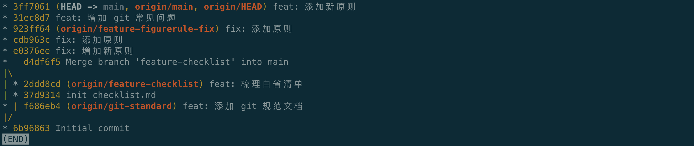
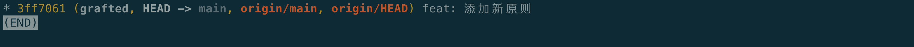

1. git 常用命令
1.1. 查看帮助信息
1
2
3
4
5
6
|
# 查看git 本身帮助信息
git --help
# 查看某命令的帮助信息
git <command> -h
git log -h
|
1.2. 配置信息
1
2
3
4
5
|
# 查看配置信息
git config --list
# 查看帮助信息
git config -h
|
1.3. 创建新分支，并推送到远程
1
2
3
4
5
|
# 创建分支 dev
git checkout -b dev
# 将 dev 推送到远程仓库，远程分支还叫 dev，这样本地 dev 和 远程 dev 之间有了映射关系
git push --set-upstream origin dev
git push -u origin dev # 相同效果
|
1.4. 合并分支
1
2
3
4
5
|
# 将 dev 分支内容合并到 master
## 1. 切回 master
git checkout master
## 2. 将 dev 合并到当前分支 master
git merge dev
|
1.5 查看分支
1
2
3
4
5
6
7
8
|
# 查看分支映射关系
git branch -vv
# 查看所有远程分支
git branch -r
# 查看所有本地分支
git branch -l
|
1.6 提交到远程
1
2
3
4
|
# 切换到要提交的分支下
git add .
git commit -m 'log_message'
git push
|
1.7 查看日志
1
2
|
# 查看日志
git log --graph --oneline --all
|
1.8 获取分支
1
2
|
## 克隆主分支的完全体，包括所有的历史日志信息
git clone git@github.com:checkmoment/docs.git
|

1
2
3
4
5
6
7
8
9
|
# 只要最新版本的信息，历史 log 就不要了。其实很多时候我们都不需要完整的日志信息，尤其是拉开源产品的源码时更是如此
## 拉取主分支
git clone --depth=1 git@github.com:checkmoment/docs.git
## 拉取其他分支
$ git clone --depth 1 https://github.com/dogescript/xxxxxxx.git
$ git remote set-branches origin 'remote_branch_name'
$ git fetch origin remote_branch_name --depth=1
$ git checkout remote_branch_name
|

2. git 分支命名规范
git 分支分为集成分支、功能分支和修复分支，分别命名为 develop、feature 和 hotfix，均为单数。不可使用features、future、hotfixes、hotfixs等错误名称。
- master（主分支，永远是可用的稳定版本，不能直接在该分支上开发）
- develop（开发主分支，所有新功能以这个分支来创建自己的开发分支，该分支做只合并操作，不能直接在该分支上开发）
- feature-xxx（功能开发分支，在develop上创建分支，以自己开发功能模块命名，功能测试正常后合并到develop分支）
- feature-xxx-fix (功能bug修复分支，feature分支合并之后发现bug，在develop上创建分支修复，之后合并回develop分支。PS:feature分支在申请合并之后，未合并之前还是可以提交代码的，所以feature在合并之前还可以在原分支上继续修复bug)
- hotfix-xxx（紧急bug修改分支，在master分支上创建，修复完成后合并到 master）
注意事项：
一个分支尽量开发一个功能模块，不要多个功能模块在一个分支上开发。
feature 分支在申请合并之前，最好是先 pull 一下 develop 主分支下来，看一下有没有冲突，如果有就先解决冲突后再申请合并。
3. git 提交记录规范
每个 git commit 记录都需要按照固定格式，Commit message一般包括三部分：Header、Body和Footer，具体格式为：
1
2
3
4
5
|
type: subject # Header
body # Body
footer # Footer
|
1
2
3
4
5
6
7
8
9
10
11
12
13
14
15
16
|
type: 用于说明commit的类别，规定为如下几种
- feat：新功能（feature）
- fix：修补bug
- docs：文档（documentation）
- style： 格式（不影响代码运行的变动）
- refactor：重构（即不是新增功能，也不是修改bug的代码变动）
- test：增加测试
- chore：构建过程或辅助工具的变动
subject：commit的简要说明，尽量简短
body: 对本次commit的详细描述，可分多行
footer:
- 不兼容变动：需要描述相关信息
- 关闭指定Issue：输入Issue信息
|
4. git 常见问题
4.1 Failed to connect to xxx 443: Operation timed out
1
2
3
4
5
6
7
8
9
10
11
12
13
14
15
16
17
18
|
# 现象
连接着vpn，网页上可以直接打开网站。但是使用terminal 执行
git clone https://chromium.googlesource.com/xxxx
Failed to connect to chromium.googlesource.com port 443: Operation timed out
# 原因
这是因为terminal没有走代理的流量
# 方法
使用git config --global http.proxy "localhost:port"，设置代理。
port是端口号，根据不同的vpn不一样，我这里使用的是lartern，端口是50321。
# 操作
git config --global http.proxy "localhost:8001"
# 取消代理
git config --global --unset http.proxy
git config --global --unset https.proxy
|
4.2 让终端走代理的方法
1
2
3
|
# 将以下两句加到 .bashrc 里去
export http_proxy=localhost:8001
export https_proxy=localhost:8001
|